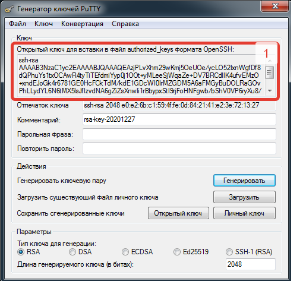

Генерируем ключ в программе Pytty-keygen
Запускаем программу нажимаем генерировать
В поле комментарий указываем название ключа ( для себя что бы не забыть от чего ключ)
парольная фраза указываем пароль на ключ (рекомендуеться) Необходимо будет вводить пароль при каждом подключении. Если не указывать подключаться будет автоматически.
Нажимаем Открытый ключ и сохраняем в папку C:\Users\Пользователь\.ssh под именем id_rsa.pub
Нажимаем Конвертация выбираем Экспортировать ключ в формате OpenSHH указываем имя id_rsa ( это закрытый ключ)
Сохраняем личный ключ в формате name.ppk (его в клюбое время можно открыть Pyttygen и извлечь открытй ключь,)
Копируем ключ из поля 1 и вставляем его в личном кабинет Github
На Win 7 файлы id_rsa , id_rsa.pub должны находиться в директории C:\Users\Пользователь\.ssh